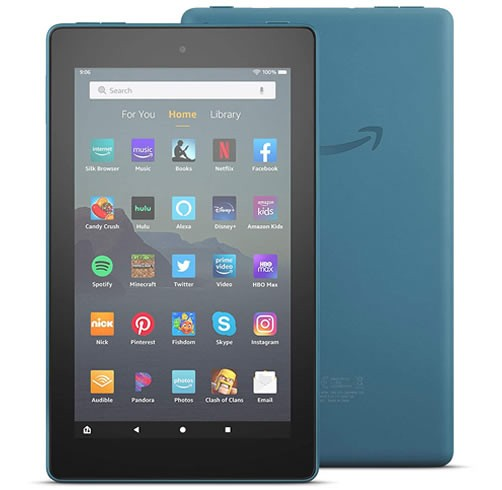
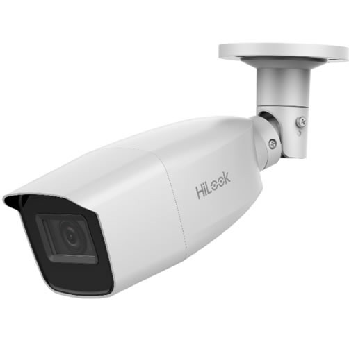

AMAZON - ECHO DOT (4TH GEN) CON RELOJ- TWILIGHT BLUE

Marca: Amazon
Dimensiones: 100 x 100 x 89 mm
Conectividad: WiFi /Bluetooth.
Sonido:1 x altavoz de 1,6"
Entrada/salida jack
AMAZON FIRE 7 16GB AZUL
Marca: Amazon
Pantalla: 7” con resolución de 1024 x 600 IPS
Dimenciones: 192 x 115 x 9.6 mm
CPU: Quad-Core 1.3 GHz
Ram: 1gb
Almacenamiento: 16gb
AMAZON - ECHO DOT (4TH GEN) CON RELOJ- TWILIGHT BLUE
Marca: Amazon
Dimensiones: 100 x 100 x 89 mm
Conectividad: WiFi /Bluetooth.
Sonido:1 x altavoz de 1,6"
Entrada/salida jack
HILOOK CAMARA THC-B310-VF
Imágenes de alta calidad con resolución de 1280 × 720
Lente varifocal de 2,8 mm a 12 mm
Distancia IR de hasta 40 m para imágenes nocturnas brillantes
Resistente al agua y al polvo (IP66)
HIKVISION CAMARA EXTERIOR DS-2CE56C0T-VFIR3F

Sensor De Imagen 2MP CMOS image sensor
Max. Resolución 1920 (H) × 1080 (V)
Iluminación Mínima0.01 Lux@(F1.2,AGC ON), 0 Lux with IR
Tiempo De Obturación 1/25 (1/30) s to 1/50,000 s
Día Y Noche ICR
Ajuste De ÁnguloPan: 0° to 360°, Tilt: 0° to 75°, Rotation: 0° to 360°
Señal Del SistemaPAL/NTSC
Protección IP66